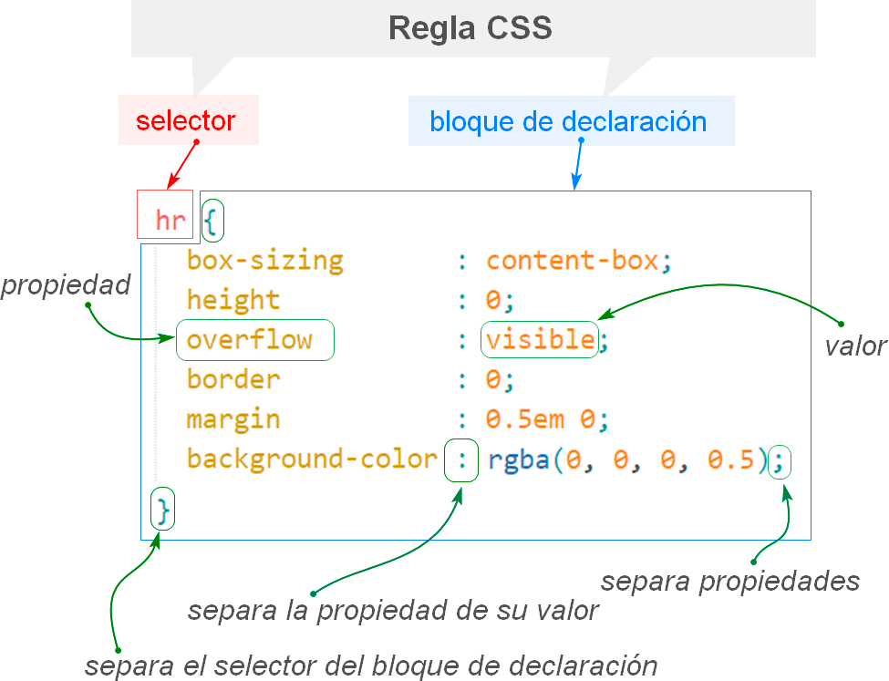

en siginificado de css son Las hojas de estilo en cascada permiten crear páginas web atractivas.
el CSS es un lenguaje informático que especifica cómo se presentan los documentos a los usuarios: cómo se diseñan, compaginan, etc. esta misma se utiliza en el lengujae de html.
se le llama regla a lo principal de mi página se muestre en letras grandes de color rojo.
h1 {
color: red;
font-size: 5em;
}

Selector:
Un selector CSS es la primera parte de una regla CSS. Es un patrón de elementos y otros términos que indican al
navegador qué elementos HTML se seleccionan para aplicarles una regla que incluye los valores de las propiedades
CSS.
declaraciones:
Una declaración de CSS es un bloque que especifica el conjunto de estilos que se añadirán a un elemento HTML.
propiedades:
Identificadores legibles por los humanos que indican qué características de estilo
valoracion de propiedades:
A cada propiedad especificada se le asigna un valor que indica cómo quieres que cambien esas características de
estilo.
Un selector CSS es la primera parte de una regla CSS. Es un patrón de elementos y otros términos que indican al navegador qué elementos HTML se seleccionan para aplicarles una regla que incluye los valores de las propiedades CSS.
id:
Puede utilizar este atributo para dar formato a la vista de operador con CSS o para manipular el modelo de
objeto de documento con código.
Clases:
Las clases son las que permiten al CSS acceder a elementos específicos a través de los selectores de clase o
funciones como el método document.
Universal:
De forma automática, el asterisco selecciona todos los elementos en un documento. Este selector puede utilizarse
en combinación con espacios de nombres.
Etiqueta:
esta misma se utilisa para darle estilo a nuestro pagina web ya que es un elemento HTML.
decendentes:
Selecciona los elementos que se encuentran dentro de otros, cuando se encuentra entre las etiquetas de apertura
y de cierre del otro elemento.
1-
Crear un archivo con extensión CSS, en este archivo, escribiremos todas las reglas de estilo que queremos
aplicar a nuestros elementos HTML.
2-
Una vez que hayamos creado nuestro archivo CSS, debemos vincularlo al documento HTML.
el primero que eleji fue este : pagina 1 el segundo que eleji fue este : pagina 2
la etiqueta dentro del body es igual en los dos lados
lo que no es igual es css ya que son diferentes a su codigo
En si los dos codigos tiene muchas cosas diferentes y muchisimos cambios.
| Propiedad | Descripción | Valores posibles |
|---|---|---|
| color | Define el color del texto. | color: red; |
| background-color | Define el color de fondo de un elemento | background-color: black; |
| font-size | Define el tamaño de la fuente del texto. | 200 px |
| font-weight | Define el grosor de la fuente del texto (por ejemplo, si se trata de texto en negrita o normal). | 400 px |
| font-style | Define el estilo de la fuente del texto (por ejemplo, si es cursiva o normal). | |
| font-family | Define el tipo de letra a utilizar para el texto. | |
| text-align | Define la alineación horizontal del texto (izquierda, centro o derecha) | |
| text-decoration | Define la decoración del texto (por ejemplo, si está subrayado o tachado). | |
| text-transform | Define la transformación del texto (por ejemplo, en mayúsculas o minúsculas). | |
| letter-spacing | Define el espacio entre letras. | |
| line-height | Define la altura de línea del texto. |